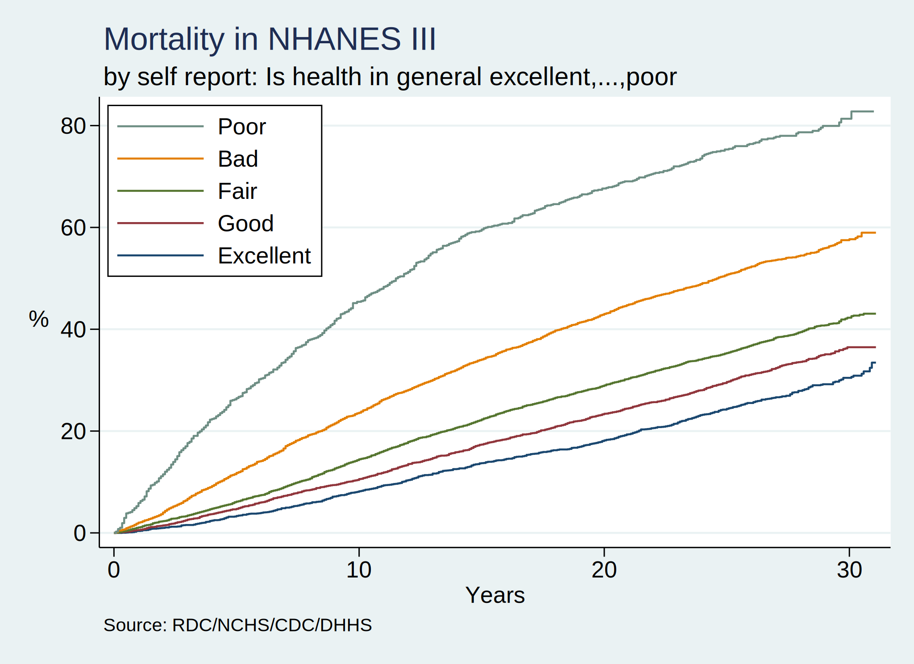

Increasing access to the NHANES 1988-2018 surveys & mortality linkage data via a user-friendly Stata program
Junming Gong, Mu Jin, Sohyeon Kwon, and Xueer Zhang
Background:
We are developing skills that allow us to access publicly available large databases that may be queried to answer fundamental questions about the publics health. These datasets might exist in formats unfamiliar to Stata users or in sizes that cripple ones workflow.
In our first two weeks, we curated a dataset with all the mortality records in the United States from 1959-2017 and wrote a basic Stata script that output a two-way plot showing annual trends in number of deaths during this period. In the subsequent two weeks we wrote a Stata program, mortality, that allows the user to define the time-period of interest, plus other parameters such as cause-of-death, and ultimately produce a similar two-way plot with the convenience of a Stata command.
Our goal for the second-half of the class is to leverage this experience to give Stata users access to the entire range of NHANES surveys via a simple command, nhanes, with several user-defined options. We have not yet articulated what these options are but will do so on an emerging basis each week.
Today let’s start by reading in the alpha-version of this program, which we adopted from Chapter: r(mean) of the PH.340.600 book. Depending on your Stata edition, this program will either import a dataset with 20,000 observations and 3600 variables or 20,000 observations and 22 variables:
. capture program drop nhanes
. program define nhanes
1.
. preserve
2.
. qui {
3.
. if 0 { //background:r(mean)
4.
. 1. Stata/BE or IC
5. 2. r(k) < 2048
6. 3. exam.DAT: r(k) == 2368
7. 4. inaccessible to jhustata
8. 5. program to grant access
9.
. }
10.
. if 1 { //methods:$keepvars
11.
. timer on 1
12.
. global github https://raw.githubusercontent.com/
13. global jhustata jhustata/book/main/
14. global keepvars HSAGEIR BMPHT BMPWT HAZA8AK1 CEP GHP HAB1
15.
. timer off 1
16.
. }
17.
. if 2 { //results:.dofiles
18.
. timer on 2
19.
. clear
20.
. do ${github}${$jhustata}nh3mort.do
21.
. if c(edition_real) == "BE" | c(edition_real) == "IC" {
22.
. clear
23.
. do ${github}${$jhustata}nhanes-alpha-if2.do
24.
. }
25.
. else {
26.
. clear
27.
. do ${github}${$jhustata}nhanes-alpha-if0.do
28.
. }
29.
.
. timer off 2
30.
. }
31.
. if 3 { //conclusions:queueing
32.
. timer on 3
33.
. timer on 31
34. clear
35. do adult.do
36. rename *,lower
37. save adult.dta,replace
38. timer off 31
39.
. timer on 32
40. clear
41. do exam.do
42. rename *,lower
43. save exam.dta,replace
44. timer off 32
45.
. timer on 33
46. clear
47. do lab.do
48. rename *,lower
49. save lab.dta,replace
50. timer off 33
51.
. timer off 3
52.
. }
53.
. if 4 { //acknowledge:linkage
54.
. timer on 4
55.
. use adult, clear
56. merge 1:1 seqn using exam,nogen
57. merge 1:1 seqn using lab,nogen
58. merge 1:1 seqn using nh3mort,nogen keep(matched)
59.
. timer off 4
60.
. }
61.
. if 5 { //dataset4class:
62.
. timer on 5
63.
. compress
64. lab dat "NHANES 1988-1994, survey & mortality"
65. save "nh3andmort.dta", replace
66.
. timer off 5
67.
. }
68.
. if 6 { //survivalanalysis:
69.
. timer on 6
70.
. lookfor mort
71. codebook mortstat
72. lookfor follow
73. g years=permth_exm/12
74.
. lookfor health
75. codebook hab1
76. global subgroup: var lab hab1
77.
. stset years, fail(mortstat)
78.
. #delimit ;
delimiter now ;
. sts graph if inrange(hab1,1,5),
> by(hab1)
> fail
> ti("Mortality in NHANES III",pos(11))
> subti("by self report: ${subgroup}",pos(11))
> yti("%",orientation(horizontal))
> xti("Years")
> per(100)
> ylab(0(20)80,
> format(%3.0f)
> angle(360)
> )
> legend(on
> lab(1 "Excellent")
> lab(2 "Good")
> lab(3 "Fair")
> lab(4 "Bad")
> lab(5 "Poor")
> ring(0)
> pos(11)
> col(1)
> order(5 4 3 2 1)
> )
> note("Source: RDC/NCHS/CDC/DHHS")
> ;
79. #delimit cr
delimiter now cr
.
. graph export nh3andmort.png,replace
80.
. stcox i.hab1 if inrange(hab1,1,5)
81.
.
. timer off 6
82.
. }
83.
. noi timer list
84.
. }
85.
. restore
86.
. end
. nhanes
1: 0.01 / 7 = 0.0014
2: 33.71 / 7 = 4.8151
3: 2061.18 / 7 = 294.4536
4: 67.54 / 7 = 9.6487
5: 333.24 / 7 = 47.6056
6: 45.45 / 7 = 6.4924
31: 434.31 / 7 = 62.0446
32: 1267.31 / 7 = 181.0440
33: 359.55 / 7 = 51.3649
Methods:
For Stata/BE or IC users this current program outputs an NHANES dataset with 22 pre-specified variables. Over the next week we shall release the next iteration of the program, which will allow the user to list the variables they wish to be imported from the CDC website.
Results:
When a Kaplan-Meier graph pops up on your screen, that will be your cue that the program has run to completion and that you have an NHANES III dataset in your pwd.
. set scheme s2color
. nhanes

Conclusions:
Now that we have established our workflow, updates to our program will be published on a weekly basis and the URL will be sent to the student team as well as the teaching team in the first five minutes of each class session. A question not to ask: shall we ever need to annotate our .do files if we can offer much richer documentation in e-books built using .html?
. use nh3andmort, clear
(NHANES 1988-1994, survey & mortality)
. di "obs: `c(N)' & vars: `c(k)'"
obs: 19599 & vars: 3643
Acknowledgments:
We initially published our Stata output in a Jupiter-book hosted by Github. All the .html content of the book was produced in a Python environment; however, Stata .html output will gradually replace the Python-based output of the book as we truly become advanced Stata users!
VS Code terminal is our IDE choice for committing and pushing our git content to our hub and have established a seamless process for updating our publication.
References:
{kind=link}